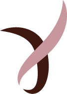

Propuesta de rediseño · home de mycoco.es · no publicada
No defendemos una decisión. Defendemos que puedas decidir.·Prótesis externas de pezón donadas·Acompañamiento entre mujeres que han pasado por lo mismo·Observatorio: lo que en España no se mide·No defendemos una decisión. Defendemos que puedas decidir.·Prótesis externas de pezón donadas·Acompañamiento entre mujeres que han pasado por lo mismo·Observatorio: lo que en España no se mide·
De la referencia tomo tres cosas: la marquesina superior, la escala del titular y una navegación mínima. No tomo el registro. Teta & Teta grita a la sociedad y le sale bien. My Coco le habla a una mujer a la que diagnosticaron el martes. Mismo feminismo, trabajo distinto: si esta web grita, falla justo a quien tiene que servir.

Autonomía corporal después del cáncer de mama
Tu cuerpo.Tus tiempos.Tu decisión.
Después de una mastectomía hay más de un camino, y ninguno es el correcto por defecto. Te ayudamos a entender tus opciones, a decidir a tu ritmo y a acceder a una prótesis externa de pezón donada.
Sin registro. Sin coste. Puedes volver cuando quieras.
El titular ocupa la pantalla, pero en Cormorant sobre beige en lugar de una condensada negra sobre blanco. La escala da la confianza; la paleta cálida evita que suene a campaña de denuncia. «Tu decisión» va en cursiva y en teja: es la única palabra que cambia de color en toda la portada. Las tres líneas suben desde su propia caja al cargar — 0,9 s, escalonadas 90 ms. Es el único efecto de entrada de la página.
Empieza por aquí
¿Dónde estás ahora mismo?
Elige una y la web se ordena para ti. No preguntamos nada más.
Esta es la pieza más importante de la portada y la más barata de construir. Es el selector de momento del funnel: una sola pregunta que decide a qué página entra y qué secuencia de correos recibe. Sin fecha de diagnóstico, sin tipo de tumor, sin estadio — nada que sea dato de salud identificable. En WordPress es un bloque con seis enlaces; no necesita plugin.
Las opciones
No existe una única forma correcta de vivir tu cuerpo
Cada una de estas opciones es legítima. La que elijas depende de tu situación clínica, de tus tiempos y de lo que a ti te importe.
Reconstruirte
Con implante o con tejido propio, en el mismo momento de la cirugía o más adelante.
No reconstruirte
Vivir con el resultado de la mastectomía, con o sin cierre plano acordado con cirugía.
Prótesis externa
Mamaria, de pezón o ambas, sin cirugía añadida y de forma reversible.
No usar nada
Ni reconstrucción ni prótesis. Es una opción, no una renuncia.
Decidir después
Cuando clínicamente sea posible, y cuando tú quieras. Aplazar también es decidir.
My Coco no recomienda ninguna. Te damos la información y las preguntas para que la decisión la tomes tú con tu equipo médico.
Las cinco columnas miden exactamente lo mismo. Mismo ancho, mismo alto, misma longitud de texto, sin iconos, sin una destacada, sin numerar y sin orden que sugiera preferencia. Es la regla de neutralidad convertida en rejilla: si una opción ocupa más, el diseño ya ha decidido por ella. Por eso en pantallas medianas pasan a una sola columna y no a dos: dos columnas con cinco tarjetas dejan una huérfana, y la huérfana destaca. Esto hay que defenderlo con quien maquete.
Observatorio
En España se mide el tumor. No se mide la decisión.
Reunimos lo que sí está publicado y señalamos lo que falta. Cada cifra va con su fuente y su periodo. Cuando no hay dato, lo decimos.
37.682
nuevos casos de cáncer de mama femenino estimados en España.
REDECAN — Estimación de la incidencia de cáncer en España, 2025.
29%
de reconstrucción observada: 22% inmediata y 7% diferida. Sube al 58% en menores de 46 años.
Estudio del Sistema Sanitario Público de Andalucía sobre mastectomías por cáncer de mama 2010-2013 (n = 4.412 con seguimiento superior a 2 años).
763
días de demora media cuando la reconstrucción es diferida. Más de dos años.
Misma fuente: estudio del SSPA de Andalucía, mastectomías 2010-2013.
82,3%
de los profesionales encuestados no ha recibido formación en toma de decisiones compartida.
Encuesta a oncólogos y cirujanos, Andalucía.
Sin dato
Cuántas mujeres eligen no reconstruirse o quieren un cierre plano estético en España.
No existe serie pública nacional. Es el primer vacío que el observatorio quiere medir.
Lo que nadie ha medido todavía
Uso real de prótesis externas: frecuencia, coste y satisfacción.
Porcentaje que aplaza la decisión, y demora decisional por comunidad autónoma.
Arrepentimiento y satisfacción con la decisión tomada.
Desglose entre mastectomía terapéutica y preventiva, unilateral y bilateral.
Listas de espera para reconstrucción: no hay serie pública homogénea.
Esta sección no está en la maqueta y es la que más cambia el negocio. Es el activo de posicionamiento: ser la fuente que ChatGPT, Perplexity y los resúmenes de Google citan cuando alguien pregunta por la reconstrucción en España. Para eso las cifras van en texto, no en imagen, cada una con su fuente al lado, y el bloque irá con datos estructurados Dataset de Schema.org. «Sin dato» es deliberado: declarar el vacío es lo que convierte una web en observatorio. Las cifras salen de .agent/knowledge/observatorio-datos.md, no de la web actual: las de mycoco.es (16.000 mastectomías/año de SECPRE, 20.000 de ECIR 2019) están sin fechar o desactualizadas.
El programa
Prótesis externas de pezón, donadas
Se coloca sobre la piel y se puede quitar. No es cirugía y no es permanente. Para algunas mujeres resuelve algo concreto; para otras no hace falta. Las dos respuestas están bien.
Más de la mitad de las supervivientes de cáncer de mama refiere problemas sexuales, y la mitad, preocupación por su apariencia. Casi ninguna lo habló antes con un profesional.
Informe de supervivientes de cáncer de mama de la AECC (n = 1.293): problemas sexuales 52,9%; preocupación por la apariencia 50,8%.
Foto — manos, gesto cotidiano
Deseo e intimidad
Qué cambia, qué tiene tratamiento y cómo empezar la conversación. Sin dar por hecho que tienes pareja.
La fotografía es donde esta web se juega la credibilidad. Piel real y textura. Nada de stock sonriente con pañuelo en la cabeza, nada de lazo rosa, nada de flores. Cuerpos reales con consentimiento escrito, luz natural y revelado cálido coherente con la paleta. Los tres rectángulos de color son marcadores de posición, no diseño final.
Sobre My Coco
Esto empezó acompañando a mi madre
Empezamos diseñando una prótesis. Escuchando a las mujeres entendimos que había mucho más que diseñar.
Sara GascónFundadora de My Coco y de Positiv@s pero Realistas
La historia va en página propia, no aquí. En la portada solo entra la cita y la firma. Si el relato personal y la información sanitaria comparten página, la web pierde el E-E-A-T entero. Y antes de publicar esa página hace falta el consentimiento por escrito de la familia sobre qué se cuenta y qué no: es la única página que expone a una persona real que no es Sara. El texto largo sale de Recursos/Hola, soy Sara….docx.
Nos han contado
Aragón TVAntena 3La RazónHeraldoConSaludGoAragónITA InnovaWomen TechFlor de Vida
Cada pieza con su enlace y su fecha. Las apariciones se listan, no se presumen: quien llega aquí está comprobando si puede fiarse.
Estos nueve son los que constan hoy en mycoco.es, así que los doy por publicados. Lo que falta es el enlace y la fecha de cada pieza — sin eso no van con logo, van en una lista de texto. Un logo de más en una web de salud es un problema, no un adorno. Pásame la lista y la monto entera.
Cómo trabajamos
Las reglas con las que se escribe esta web
Revisión profesional
Los contenidos nacen de lo que cuentan las mujeres y los revisa un profesional. Cada página lleva autora, revisora y fecha.
Neutralidad
No recomendamos ninguna opción corporal. Damos información y preguntas.
Privacidad
Pedimos los datos mínimos. Los de salud tienen un tratamiento aparte.
Límites claros
No damos consejo médico individual ni atendemos urgencias. Cuando corresponde, derivamos.
Empresas
Las empresas financian cada prótesis
Recibes el dato de cuántas se han entregado gracias a tu aportación, no una foto para octubre.
Empresas va en contorno, abajo y sobre otro fondo. Nunca compitiendo con el CTA de apoyo. Una mujer y una empresa no pueden sentir que están en la misma conversación.
Positiv@s pero Realistas
Hablamos de esto cada semana
El podcast donde se habla del cáncer de mama sin miedo y sin adornos. Un espacio seguro y libre de juicios.